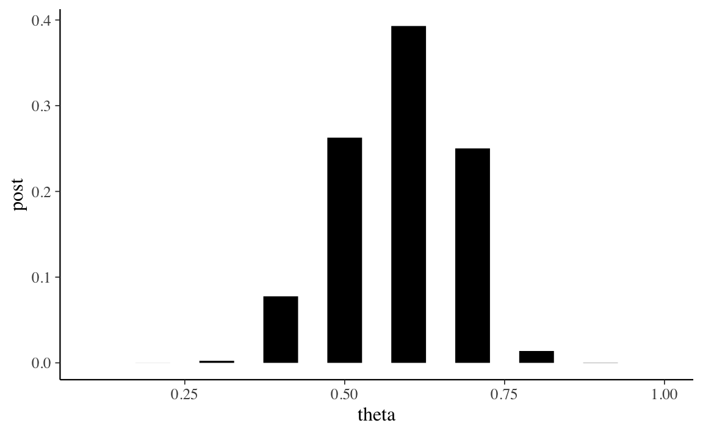

2.1 Inferenza bayesiana con una distribuzione a priori discreta
Nei problemi tradizionali di teoria delle probabilità ci sono molti esempi che riguardano l’estrazione di palline colorate da un’urna. In questi esempi, ci viene fornito il numero di palline di vari colori presenti nell’urna e ci viene chiesto di calcolare le probabilità di vari eventi. Ad esempio, in un’urna ci sono 40 palline bianche e 20 rosse. Se estrai due palline a caso, qual è la probabilità che entrambe siano bianche?
L’approccio bayesiano considera uno scenario diverso, ovvero quello in cui non conosciamo le proporzioni delle palline colorate presenti nell’urna. Cioè, nell’esempio precedente, sappiamo solo che nell’urna ci sono due tipi di palline colorate, ma non sappiamo che 40 sono bianche (proporzione di bianco = \(2/3\)) e 20 sono rosse (proporzione di rosso = \(1/3\)). Ci poniamo la seguente domanda: è possibile inferire le proporzioni di palline nell’urna estraendo un campione di palline dall’urna e osservando i colori delle palline nel campione? Espresso in questo modo, questo diventa un problema di inferenza statistica, perché stiamo cercando di inferire la proporzione \(\theta\) della popolazione sulla base di un campione casuale. Per continuare con l’esempio precedente, quello che vogliamo fare è inferire \(\theta\), la proporzione di palline rosse nell’urna, in base al numero di palline rosse e bianche che osserviamo nel campione.
Le proporzioni assomigliano alle probabilità. Ricordiamo che sono state proposte tre diverse interpretazioni del concetto di una probabilità.
- Il punto di vista classico: è necessario enumerare tutti gli eventi elementari dello spazio campionario in cui ogni risultato è ugualmente probabile.
- Il punto di vista frequentista: è necessario ripetere l’esperimento esperimento casuale (cioè l’estrazione del campione) molte volte in condizioni identiche.
- La visione soggettiva: è necessario esprimere la propria opinione sulla probabilità di un evento unico e irripetibile.
La visione classica non sembra potere funzionare qui, perché sappiamo solo che ci sono due tipi di palline colorate e il numero totale di palline è 60. Anche se estraiamo un campione di 10 palline, possiamo solo osservare la proporzione di palline rosse palline nel campione. Non c’è modo per stabilire quali sono le proprietà dello spazio campionario in cui ogni risultato è ugualmente probabile.
La visione frequentista potrebbe funzionare nel caso presente. Possiamo considerare il processo del campionamento (cioè l’estrazione di un campione casuale di 10 palline dall’urna) come un esperimento casuale che produce una proporzione campionaria \(p\). Potremmo quindi pensare di ripetere l’esperimento molte volte nelle stesse condizioni, ottenere molte proporzioni campionarie \(p\) e riassumere poi in qualche modo questa distribuzione di statistiche campionarie. Ripetendo l’esperimento casuale tante volte è possibile ottenere una stima abbastanza accurata della proporzione \(\theta\) di palline rosse nell’urna. Questo processo è fattibile, ma è però noioso, dispendioso in termini di tempo e soggetto ad errori.
La visione soggettivista concepisce invece la probabilità sconosciuta \(\theta\) come un’opinione soggettiva di cui possiamo essere più o meno sicuri. Abbiamo visto in precedenza come questa opinione soggettiva dipenda da due tipi di evidenze: le nostre credenze iniziali e le nuove informazioni fornite dai dati che abbiamo osservato. Vedremo in questo capitolo come sia possibile combinare le credenze iniziali rispetto al possibile valore \(\theta\) con le evidenza fornite dai dati per giungere ad una credenza a posteriori su \(\theta\). In particolare, vedremo come si possa pensare in termini soggetti a delle quantità sconosciute (in questo caso, \(\theta\)) usando le distribuzioni di probabilità.
Sappiamo che, essendo una proporzione, \(\theta\) può assumere valori compresi tra 0 e 1. Potremmo pensare che \(\theta\) sia uguale, ad esempio, a 0.5. Ciò significa assegnare all’evento \(\theta = 1\) la probabilità 1 – in altri termini, significa dire che siamo assolutamente certi che la quantità sconosciuta \(\theta\) ha il valore di 0.5. Questa posizione, però, è troppo estrema: non possiamo essere assolutamente certi che una quantità sconosciuta abbia uno specifico valore; altrimenti non sarebbe una quantità sconosciuta. Invece, sembra più sensato pensare che \(\theta\) può, in linea di principio, assumere valori diversi e, a questi valori, vengono attribuiti diversi livelli di certezza soggettiva. Consideriamo, ad esempio, 10 possibili valori per \(\theta\):
theta <- seq(0.1, 1, length.out = 10)
theta
#> [1] 0.1 0.2 0.3 0.4 0.5 0.6 0.7 0.8 0.9 1.0Se non abbiamo alcun motivo di pensare diversamente, potremmo pensare di assegnare a ciascuno di questi valori lo stesso livello di plausibilità:
p1 <- rep(0.1, 10)
p1
#> [1] 0.1 0.1 0.1 0.1 0.1 0.1 0.1 0.1 0.1 0.1tibble(theta, p1) %>%
ggplot(aes(theta, p1)) +
geom_segment(
aes(xend = theta, yend = 0),
size = 10, lineend = "butt"
)
Oppure, per qualche ragione, potremmo pensare che i valori centrali della distribuzione di \(\theta\) siamo più plausibili dei valori estremi. Tale opinione soggettiva potrebbe corrispondere alla seguente distribuzione di massa di probabilità:
p2 <- c(
0.05, 0.05, 0.05, 0.175, 0.175, 0.175, 0.175, 0.05, 0.05, 0.05
)
p2
#> [1] 0.050 0.050 0.050 0.175 0.175 0.175 0.175 0.050 0.050 0.050tibble(theta, p2) %>%
ggplot(aes(theta, p2)) +
geom_segment(
aes(xend = theta, yend = 0),
size = 10, lineend = "butt"
)
La prima distribuzione di probabilità è chiamata distribuzione discreta uniforme perché attribuisce la stessa probabilità (ovvero, 1/10) ad ogni elemento dell’insieme discreto su cui è definita (ovvero, \(0.1, 0.2, \dots, 1.0\)). Anche la seconda distribuzione è discreta, ma non è uniforme: viene ritenuto più plausibile che \(\theta\) assuma un valore nell’insieme \(\{0.4, 0.5, 0.6, 0.7\}\) piuttosto che nell’insieme \(\{0.1, 0.2, 0.3, 0.8, 0.9, 1.0\}\).
Le credenze relative alla plausibilità dei possibili valori che \(\theta\) possono assumere forme diverse e corrispondono a quella che viene chiamata la distribuzione a priori, ovvero descrivono le credenze che possediamo relativamente alla quantità sconosciuta di interesse.
La procedura di inferenza bayesiana non fa altro che “aggiornare” tali credenze a priori utilizzando le informazioni fornite da un campione di dati. Usando il teorema di Bayes, le informazioni dei dati vengono combinate con le nostre precedenti credenze relative alla quantità sconosciuta \(\theta\) per giungere ad una credenza detta “a posteriori”.
Supponendo che i dati corrispondano all’osservazione di 12 palline rosse in 20 estrazioni con rimessa dall’urna, usiamo ora la seconda delle distribuzioni a priori descritte in precedenza per ottenere la distribuzione a posteriori. Il teorema di Bayes specifica la distribuzione a posteriori come il prodotto della verosimiglianza e la distribuzione a priori, diviso per una costante di normalizzazione:
\[ p(\theta \mid y) = \frac{p(y \mid \theta)p(\theta)}{p(y)}. \]
Per definire la funzione di verosimiglianza, \(p(y \mid \theta)\), è necessario pensare a come abbiamo ottenuto i dati. Abbiamo estratto 20 palline dall’una, con rimessa. Dunque, se l’estrazione è stata casuale con reinserimento, allora i dati (12 successi in 20 prove) possono essere intesi come il risultato di un esperimento casuale binomiale. Usando \(\textsf{R}\), la funzione di verosimiglianza è dunque data da:
like <- dbinom(12, 20, theta)
like
#> [1] 5.422595e-08 8.656592e-05 3.859282e-03 3.549744e-02 1.201344e-01
#> [6] 1.797058e-01 1.143967e-01 2.216088e-02 3.557765e-04 0.000000e+00tibble(theta, like) %>%
ggplot(aes(theta, like)) +
geom_segment(
aes(xend = theta, yend = 0),
size = 10, lineend = "butt"
)
Per calcolare la distribuzione a posteriori dobbiamo dunque fare il prodotto (elemento per elemento) del vettore che contiene i valori della distribuzione a priori per il vettore che contiene i valori di verosimiglianza. Tale prodotto andrà poi diviso per una costante di normalizzazione, \(p(y)\).
Per la legge della probabilità totale, il denominatore corrisponde alla probabilità marginale dei dati \(y\) ed è uguale alla somma dei prodotti tra la distribuzione a priori e la verosimiglianza calcolata in corrispondenza di ciascun valore possibile di \(\theta\). Nel nostro caso discreto, la probabilità marginale dei dati ci calcola utilizzando la distribuzione a priori
p2
#> [1] 0.050 0.050 0.050 0.175 0.175 0.175 0.175 0.050 0.050 0.050e la verosimiglianza
like
#> [1] 5.422595e-08 8.656592e-05 3.859282e-03 3.549744e-02 1.201344e-01
#> [6] 1.797058e-01 1.143967e-01 2.216088e-02 3.557765e-04 0.000000e+00Dopo avere fatto il prodotto
p2 * like
#> [1] 2.711298e-09 4.328296e-06 1.929641e-04 6.212052e-03 2.102351e-02
#> [6] 3.144851e-02 2.001943e-02 1.108044e-03 1.778882e-05 0.000000e+00dobbiamo sommare:
sum(p2 * like)
#> [1] 0.08002663Una volta calcolata la verosimiglianza marginale dei dati, possiamo trovare la distribuzione a posteriori di \(\theta\):
post <- (p2 * like) / sum(p2 * like)
post
#> [1] 3.387994e-08 5.408570e-05 2.411248e-03 7.762481e-02 2.627064e-01
#> [6] 3.929756e-01 2.501596e-01 1.384594e-02 2.222863e-04 0.000000e+00tibble(theta, post) %>%
ggplot(aes(theta, post)) +
geom_segment(
aes(xend = theta, yend = 0),
size = 10, lineend = "butt"
)
Conoscendo la distribuzione a posteriori di \(\theta\) diventa possibile calcolare altre quantità di interesse. Per esempio, la moda a posteriori di \(\theta\) si ricava direttamente dal grafico precedente, e corrisponde a 0.6. La media a posteriori è data da:
sum(pi * post)
#> [1] 3.141593La varianza della distribuzione a posteriori è
sum(theta^2 * post) - (sum(theta * post))^2
#> [1] 0.008817409Il calcolo della distribuzione a posteriori, nel caso di una distribuzione a priori discreta, è implementata nella funzione bayesian_crank() del pacchetto ProbBayes. Dato che ProbBayes non è su CRAN, può essere installato nel modo seguente:
library("devtools")
install_github("bayesball/ProbBayes")Una volta installato, il pacchetto può essere caricato come facciamo normalmente:
library("ProbBayes")Per usare bayesian_crank() procediamo come indicato di seguito:
df <- tibble(p = theta, Prior = p2)
y <- 12
n <- 20
df$Likelihood <- dbinom(y, prob = df$p, size = n)
df <- bayesian_crank(df)
df
#> # A tibble: 10 × 5
#> p Prior Likelihood Product Posterior
#> <dbl> <dbl> <dbl> <dbl> <dbl>
#> 1 0.1 0.05 0.0000000542 0.00000000271 0.0000000339
#> 2 0.2 0.05 0.0000866 0.00000433 0.0000541
#> 3 0.3 0.05 0.00386 0.000193 0.00241
#> 4 0.4 0.175 0.0355 0.00621 0.0776
#> 5 0.5 0.175 0.120 0.0210 0.263
#> 6 0.6 0.175 0.180 0.0314 0.393
#> 7 0.7 0.175 0.114 0.0200 0.250
#> 8 0.8 0.05 0.0222 0.00111 0.0138
#> # … with 2 more rowsVerifichiamo il risultato trovato calcolando, ad esempio, la media a posteriori (come abbiamo fatto sopra):
sum(pi * df$Posterior)
#> [1] 3.141593In questo modo possiamo dunque trovare la distribuzione a posteriori per \(\theta\), nel caso di qualunque distribuzione a priori discreta.